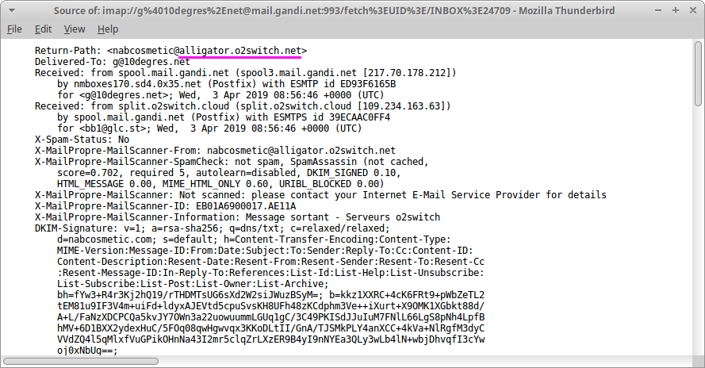
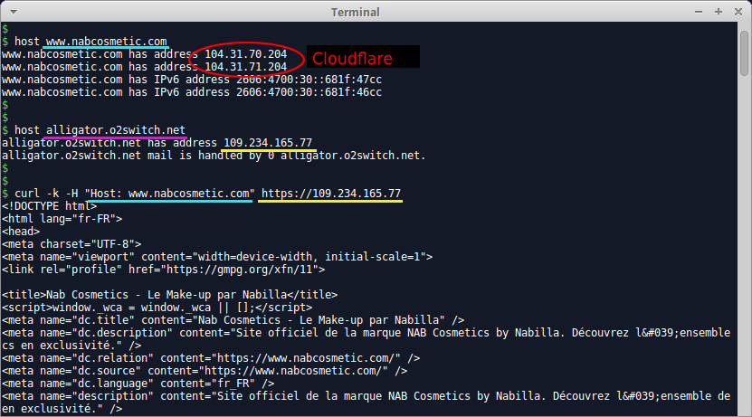
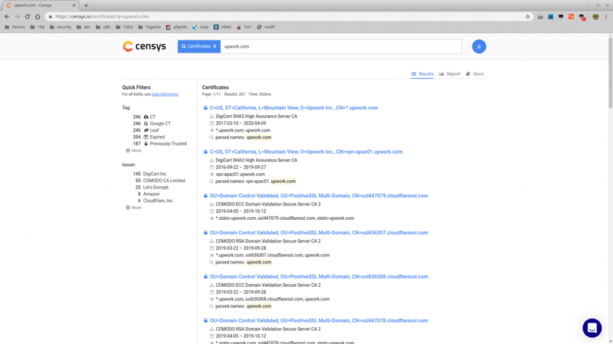
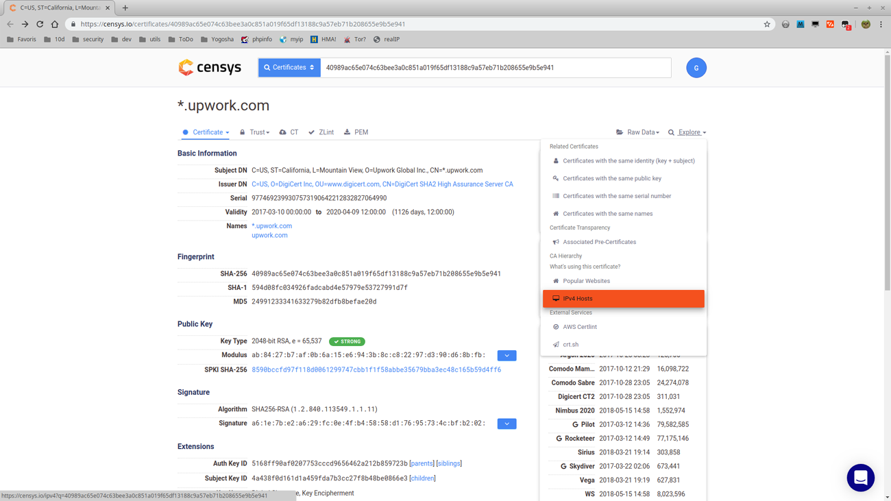
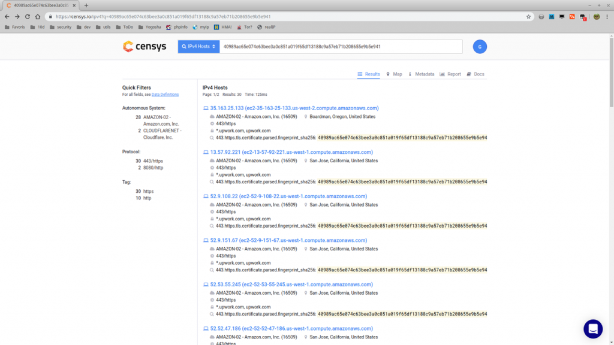
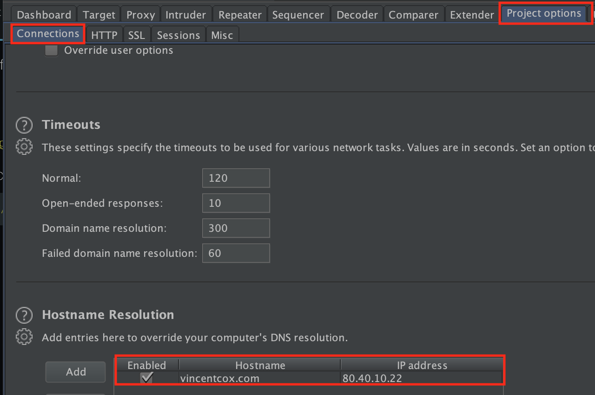

CDN绕过姿势复读
今天在信安之路公众号上读到一篇关于CDN Bypass的干货文章，觉得总结得很好。这里对里面提到的技巧做详细解释，安分地做好一台复读机！
方法
如果目标站部署了CDN，浏览器到目标站点的资源请求就转向了CDN节点，而CDN厂商通常会部署一些WAF。当我们能直接访问网站的真实IP时，就相当于绕过了一道WAF。另外，只有找到了真实IP，我们扫描目标机器的端口才有意义。
域名搜索
常见方法有SSL证书、爆破、Google Hacking、同邮箱注册人、DNS域传送、JS文件提取、网络空间搜索引擎等等，具体细节可以再延伸成一片文章，这里不表。
查询DNS历史解析记录
在DNS解析记录未删除的情况下，可以通过一些网站查到：
- http://viewdns.info
- https://x.threatbook.cn
- http://www.17ce.com
- https://dnsdb.io/zh-cn
- https://securitytrails.com
- http://www.ip138.com
- 一个工具：https://github.com/vincentcox/bypass-firewalls-by-DNS-history/
Mail 头信息（邮件探测）
当目标系统有发邮件功能时，留意响应包，可能会包含Received:等字段，其发出域名（或IP）大概率是真实IP。这类功能大多出现在注册用户、找回密码等地方。例如：


另外一个技巧是你可以用自己的邮箱向目标邮箱发邮件：doesnt_exists@yourtarget.com
SSL证书探测
方法一：可以利用网络空间搜索引擎进行SSL证书探测：比如censys等，语法：
443.https.tls.certificate.parsed.extensions.subject_alt_name.dns_names:www.xxxx.com方法二：一个搜集证书的网站https://crt.sh
方法三：通过SSL证书的hash去寻找，全网匹配法！遍历
0.0.0.0/0:443，如果证书的hash对上了，就说明是真实IP了，也可以直接用censys搜索hash值。方法四：活用Censys。



不同地区服务器访问
多换换别的地区的IP发起ping请求，有可能访问到真实IP。这里提供个网址：http://ping.chinaz.com
favicon_hash匹配
和SSL证书匹配类似，这种方法利用网站favicon来匹配。这有个工具[https://github.com/Ridter/get_ip_by_ico，它利用shodan来搜索。
CloudFlare相关
对于免费版CloudFlare，可以用DDoS消耗掉所有流量，之后请求便会转向真实IP；
常规思路：首先搜集尽可能多的与目标有关的IP（host,
nslookup,whois, 网段等），然后用工具检测开启了web服务的IP（netcat, nmap, masscan），最后访问这些网站来验证是否是真实IP。
改完域名再Ping一下
有些特殊情形下，比如网站域名为www.xxx.edu.cn，可以试试去掉四级域名，直接ping下[xxx.edu.cn]()，有时会绕过CDN。据说是和Apache的Virtual Host配置有关，参考：http://httpd.apache.org/docs/2.4/zh-cn/vhosts/examples.html
暴力破解
在确定了目标服务器的IP段后，可以用masscan获取全部banner，据此匹配真实IP。
查老域名
当老域名仍然存活时，可以看看老域名DNS记录，有可能就是真实IP。
利用应用类漏洞
例如phpinfo()、SSRF、XSS、重定向等漏洞，将请求由目标服务器发送到我们控制的服务器或collaborator，再从log中找到真实IP。（P.S. 都到这一步了，还有必要找真实IP吗╮(╯▽╰)╭）
扩展
- 在找到目标站的真实IP后，可以用
hosts文件绑定：windows下在c:\Windows\System32\Drivers\etc\hosts中，而linux下载/etc/hosts中 - BurpSuite的绑定在这个地方：